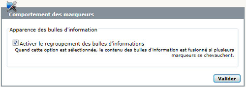

Il arrive souvent, si on géolocalise de nombreux documents, que les points soient suffisament proches pour se superposer. Le fonctionnement par défaut des API Google Maps fait alors que seul le dernier point ajouté est cliquable, les autres sont cachés.
Pour contourner ce problème, le plugin propose une fonction de regroupement des bulles d’information qui permet de naviguer entre les descriptions des différents points affichés. La barre de navigation permet également de zoomer la carte pour différencier les points.
Cette fonction est désactivée par défaut car c’est un traitement effectué côté client qui pourrait être coûteux quand il y a trop de points. Elle s’active depuis le paramétrage de l’interface.

Cette fonction est spécifique à l’implémentation, elle est implémentée pour Google Maps V2 et V3 mais ne le sera pas obligatoirement sur de futures implémentations.
Le plugin "clusterer" pour Google Maps (en V2 et V3) permet de regrouper visuellement les points. À l'avenir la fonction de clusterer pourrait être intégrée à GMap et combinée avec le regroupement des info-bulles.